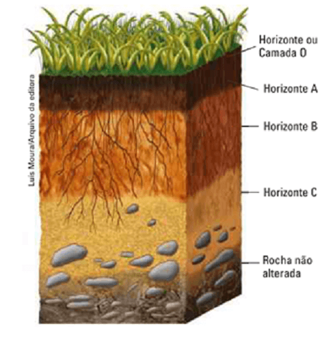
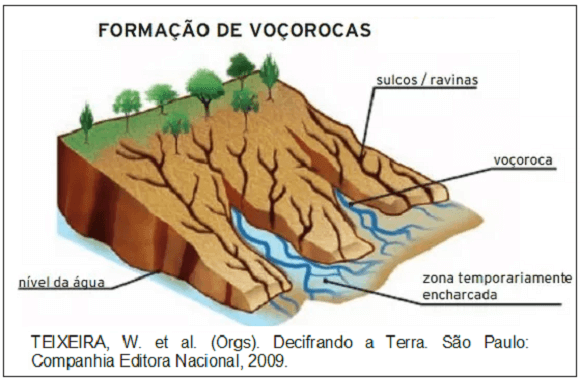
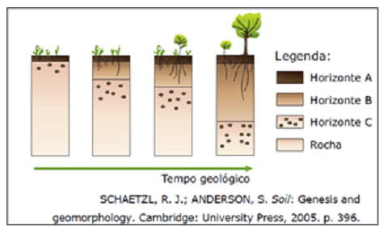
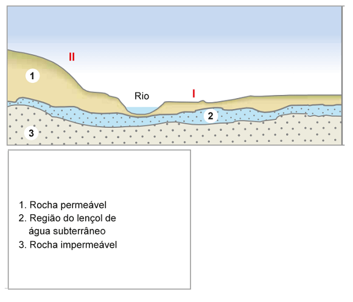
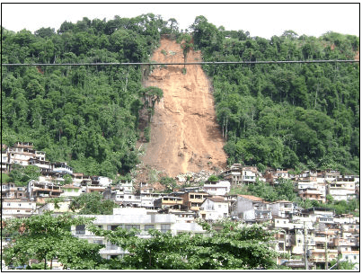

Conteúdo: Solos; Pedogênese; Horizontes do solo; laterização; lixiviação; salinização e desertificação.
Objetivo: Entender como se formam os solos, seus tipos mais comuns e identificar as formas de uso que degradam ou conservam os solos.
Questão 01
(ENEM 2011) Um dos principais objetivos de se dar continuidade às pesquisas em erosão dos solos é o de procurar resolver os problemas oriundos desse processo, que, em última análise, geram uma série de impactos ambientais.
Além disso, para a adoção de técnicas de conservação dos solos, é preciso conhecer como a água executa seu trabalho de remoção, transporte e deposição de sedimentos. A erosão causa, quase sempre, uma série de problemas ambientais, em nível local ou até mesmo em grandes áreas.
Adaptado de: GUERRA, A. J. T. Processos erosivos nas encostas. In: GUERRA, A. J. T.; CUNHA, S. B. Geomorfologia: uma atualização de bases e conceitos. Rio de Janeiro: Bertrand Brasil, 2007.
A preservação do solo, principalmente em áreas de encostas, pode ser uma solução para evitar catástrofes em função da intensidade de fluxo hídrico. A prática humana que segue no caminho contrário a essa solução é:
a) a aração.
b) o terraceamento.
c) o pousio.
d) a drenagem.
e) o desmatamento.
Comentário:
A alternativa correta é a E. Com o desmatamento os solos ficam expostos à ação dos agentes erosivos e há grande aumento na velocidade de escoamento das águas pluviais, o que aumenta sua capacidade de transportar sedimentos em suspensão.
Questão 02
(Unicamp 2013) Solo é a camada superior da superfície terrestre, onde se fixam as plantas, que dependem de seu suporte físico, água e nutrientes. Um perfil de solo é representado na figura abaixo. Sobre o perfil apresentado é correto afirmar que:

a) O horizonte (ou camada) O correspondente ao acúmulo de material orgânico que é gradualmente decomposto e incorporado aos horizontes inferiores, acumulando-se nos horizontes B e C.
b) O horizonte A apresenta muitos minerais não alterados da rocha que deu origem ao solo, sendo normalmente o horizonte menos fértil do perfil.
c) O horizonte C corresponde à transição entre solo e rocha, apresentando, normalmente, em seu interior, fragmentos da rocha não alterada.
d) O horizonte B apresenta baixo desenvolvimento do solo, sendo um dos primeiros horizontes a se formar e o horizonte com a menor fertilidade em relação aos outros horizontes
Questão 03
(UECE 2011) Aos processos de desagregação física ou decomposição química das rochas e ao desgaste e remoção dos solos e das formações superficiais da terra, dá-se as denominações respectivas de:
a) intemperismo e erosão.
b) erosão e regolito.
c) pedogênese e intemperismo.
d) tectonismo e erosão.
Questão 04
(UFSM 2016) Em relação ao solo, considere as afirmativas a seguir.
I - É um sistema composto de materiais minerais e orgânicos formado pela intemperização das rochas que fornecem os compostos minerais e, posteriormente, pela incorporação dos elementos orgânicos.
II - Forma-se em um intervalo de tempo, a partir da ação conjugada dos fatores de formação, como o clima, o relevo, a ação dos organismos vivos e a vegetação, sobre a rocha matriz que constitui o material de origem.
III - Constitui um recurso natural que é lentamente renovável, pois necessita de um tempo bastante longo para se formar; seu equilíbrio é muito delicado, apresentando limitações e demandando cuidados para seu uso.
Está(ão) correta(s)
a) apenas I.
b) apenas III.
c) apenas I e II.
d) apenas II e III.
e) I, II e III.
Questão 05
(Cesgranrio 2010) A formação dos solos se dá por fatores como a ação do Sol, das chuvas e dos ventos, que constituem o fenômeno conhecido como intemperismo. Dessa forma, as rochas vão se fragmentando e alterando suas propriedades físicas e químicas. As partículas mais sujeitas aos efeitos do intemperismo são aquelas que compõem as camadas:
a) de magma.
b) profundas.
c) superficiais.
d) intermediárias.
e) da rocha matriz.
Questão 06
(ENEM 2010)
O esquema representa um processo de erosão em encosta. Que prática realizada por um agricultor pode resultar em aceleração desse processo?

a) Plantio direto.
b) Associação de culturas.
c) Implantação de curvas de nível.
d) Aração do solo, do topo ao vale
e) Terraceamento na propriedade.
A aração do topo da encosta ao vale, pode originar pequenas fraturas no solo, que com uma chuva intensa e forte, levará grandes partes dos sedimentos arados para as partes mais baixas do relevo. A partir dessas fraturas, voçorocas e ravinas (grandes buracos realizados pela erosão pluvial) são originados, já que parte da vegetação que deveria absorver e infiltrar as águas pluviais foi retirada para o plantio.
Questão 07
(UEM 2006) A degradação dos solos transforma muitas regiões em desertos. Assinale a alternativa incorreta sobre os fatores diretamente causadores de degradação do solo.
a) O controle biológico de pragas e a adubação orgânica.
b) O desmatamento e a consequente erosão dos horizontes do solo.
c) As queimadas, que destroem a matéria orgânica.
d) A lixiviação de nutrientes provocada pela ação das chuvas sobre os solos desprotegidos.
e) A compactação do terreno provocada pela atividade pecuária
Questão 08
(UFMG 2006) Analise esta sequência de figuras, em que está representada a formação do solo ao longo do tempo geológico, sabendo que as divisões que aparecem em cada figura e na legenda representam as etapas dessa evolução:

A partir dessa análise, é INCORRETO afirmar que essa sequência de figuras sugere que:
a) a evolução e o aumento da espessura do solo estão condicionados à escala do tempo geológico.
b) o crescimento aéreo e subterrâneo da vegetação é inversamente proporcional ao desenvolvimento do solo.
c) o desenvolvimento do solo, ao longo do tempo, resulta na sua diferenciação em horizontes.
d) o material inorgânico presente no solo resulta de alterações ocorridas na rocha.
Colocar os comentários aqui.
Questão 09
(ENEM 1999) Um agricultor adquiriu alguns alqueires de terra para cultivar e residir no local. O desenho abaixo representa parte de suas;

Pensando em construir sua moradia no lado I do rio e plantar no lado II, o agricultor consultou seus vizinhos e escutou as frases abaixo. Assinale a frase do vizinho que deu a sugestão mais correta:
a) “O terreno só se presta ao plantio, revolvendo o solo com arado.”
b) “Não plante neste local, porque é impossível evitar a erosão”.
c) “Pode ser utilizado, desde que se plante em curvas de nível”.
d) “Você perderá sua plantação, quando as chuvas provocarem inundação”.
e) “Plante forragem para pasto”.
A alternativa correta é a C. O cultivo respeitando as curvas de nível reduz a velocidade de escoamento das águas pluviais e a intensidade da erosão, que, embora não possa ser totalmente evitada, pode ter sua ação bastante diminuída com a utilização de técnicas que evitem danos maiores nas áreas de agricultura e pecuária. As inundações acontecem nas superfícies planas dos fundos de vale e as encostas com declividade acentuada não são apropriadas para a criação de gado.
Questão 10
A imagem abaixo retrata um processo erosivo que se associa às chuvas:

VIANA, D. / Agência Estado. Disponível: http://noticias.r7.com /cidades. Acesso em: 21 ago. 2015.
a) pela remoção da vegetação
b) pela fixação do terreno argiloso.
c) pelo nivelamento do relevo.
d) pela intemperização química.
e) pela saturação do solo.
O deslizamento, no caso, ocorreu em uma área de intensa declividade em função do período chuvoso. A água das chuvas teve sua penetração no solo facilitada pela vegetação, de forma que o solo se tornou profundamente saturado e deslizou pela ação da gravidade.